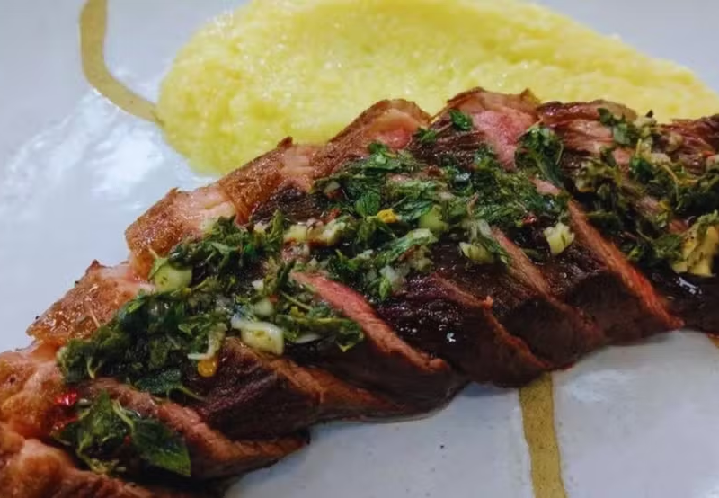
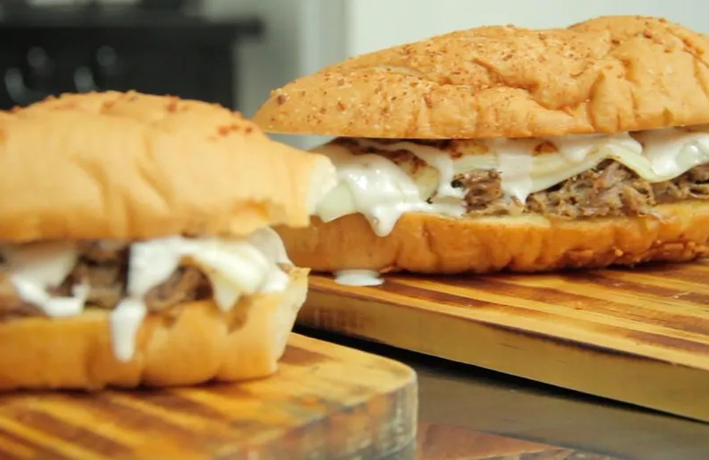
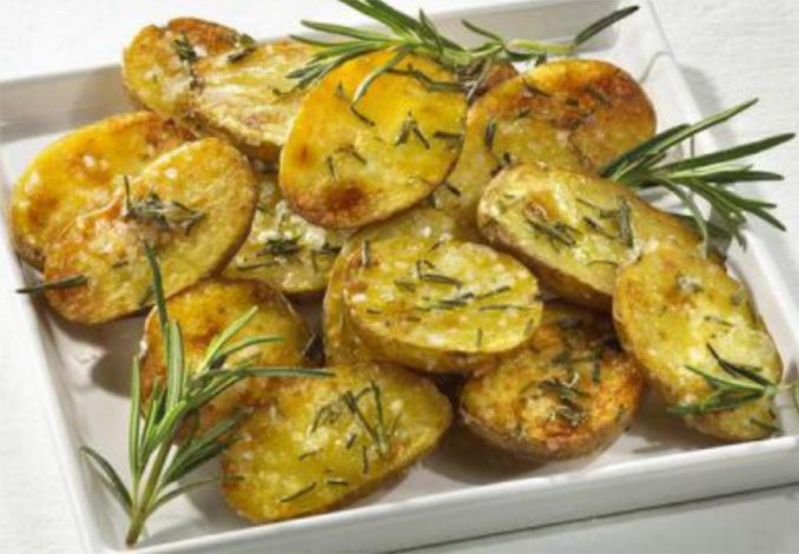

Receitas para Churrasco

Ingredientes
- 1 peça de picanha
- Sal grosso a gosto
- Pimenta do reino a gosto
- Molho Chimichurri
- Tempere a picanha com sal grosso e pimenta do reino, esfregando bem em toda a carne.
- Pré-aqueça a grelha em fogo médio-alto e coloque a picanha, com a gordura virada para cima.
- Grelhe por aproximadamente 15 minutos de cada lado, ou até atingir o ponto desejado.
- Retire a picanha da grelha e deixe descansar por alguns minutos.
- Fatie a picanha em fatias finas e sirva com o molho chimichurri.
 Ingredientes:
Ingredientes:
- Abobrinha
- Pimentão vermelho
- Cebola roxa
- Champignon
- Tomate cereja
- Azeite de oliva
- Sal e pimenta a gosto
- Corte os legumes em pedaços grandes e coloque-os em um recipiente.
- Regue os legumes com azeite de oliva e tempere com sal e pimenta a gosto.
- Deixe os legumes marinarem por pelo menos 30 minutos.
- Espete os legumes em espetos de metal ou madeira, alternando os tipos.
- Grelhe os espetos em fogo médio-alto por cerca de 10 minutos, virando ocasionalmente, até que fiquem dourados e macios.
- Sirva os espetos quentes como acompanhamento ou como prato principal para vegetarianos.

Ingredientes:
- Pães italianos
- Manteiga amolecida
- Alho picado
- Queijo mussarela ralado
- Salsinha picada
- Corte os pães italianos em fatias sem separar as bases.
- Misture a manteiga amolecida com alho picado e salsinha picada.
- Espalhe a mistura de manteiga de alho entre as fatias de pão.
- Polvilhe queijo mussarela ralado entre as fatias de pão.
- Enrole os pães em papel alumínio e leve ao churrasco por cerca de 15 minutos, virando ocasionalmente, até que o queijo esteja derretido e o pão esteja crocante por fora.
- Retire do fogo, desenrole o papel alumínio e sirva quente.

Ingredientes:
- Batatas grandes
- Azeite de oliva
- Sal e pimenta a gosto
- Alecrim fresco
Modo de Preparo:
- Lave bem as batatas e corte-as ao meio longitudinalmente.
- Faça cortes na parte interna das batatas para facilitar o cozimento.
- Regue as batatas com azeite de oliva e tempere com sal, pimenta e alecrim fresco.
- Enrole as batatas em papel alumínio e leve ao churrasco por cerca de 40 minutos, virando ocasionalmente, até que estejam macias por dentro e douradas por fora.
- Retire do fogo, desenrole o papel alumínio e sirva quente.